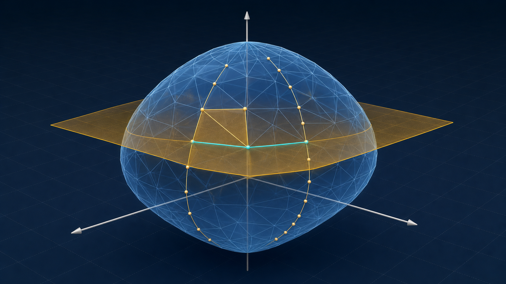

Fixed-P interpolation
Mặt phẳng cắt đúng mesh tam giác 3D
Điểm trên kinh tuyến sampled được tô đỏ; giao điểm trên cạnh chéo hoặc cạnh cross-beta được tô xanh. Cả hai đều là đỉnh thật của contour fixed-P.
Wireframe chỉ hiện kinh tuyến và vĩ tuyến màu xám; các đường chéo tam giác được ẩn.